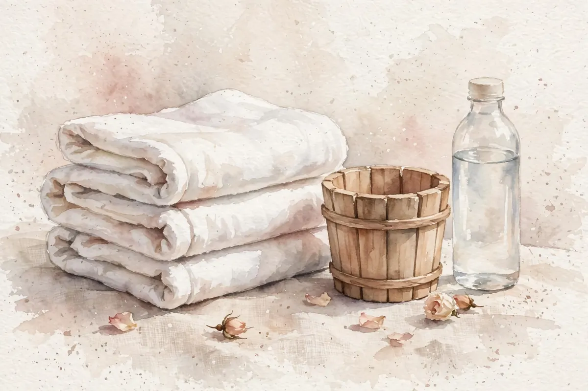
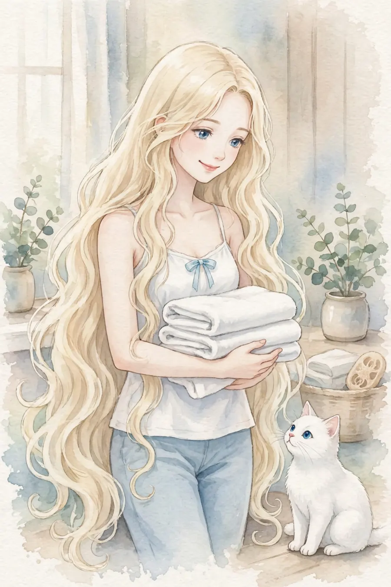

トップ ＞ ボディケア ＞ サウナ・岩盤浴の日の体のケア段取り
サウナ・岩盤浴の日の体のケア段取り

サウナや岩盤浴に行く日は、体を温めて汗をかく、という特別な一日です。施術の現場でも、「サウナのあとの体のケアはどうしたらいいか」と聞かれることがあります。サウナや岩盤浴の日は、入る前と、合間の休憩と、出たあとの段取りが、それぞれあります。この記事では、サウナ・岩盤浴の日の体のケアの段取りを整理します。特定の施設の話ではなく、汗をかく日の体の扱い方の考え方です。体調がすぐれないときは無理をせず、持病のある方は、事前に医師に相談してください。
入る前：体を洗う順番と、持ち物の段取り
サウナや岩盤浴に入る前は、まず体を洗います。汗や皮脂の汚れを落としてから入る、というのが、施設の案内でも一般的な流れです。洗う順番は、髪、顔、体、という上から下へ進めるのが、無理のないやり方です。体を洗うときは、石けんやボディソープを泡立てて、手やタオルでやさしく洗います。強くこする必要はありません。
持ち物の段取りも、入る前に確認しておきます。タオルは、体を拭く用と、サウナの中で座る用の2枚があると安心です。水分補給の飲み物は、入る前に用意しておきます。サウナや岩盤浴の合間に飲む分と、出たあとに飲む分を、合わせて持っておくのが基本です。保湿のアイテムは、出たあとに使うので、ロッカーに置いておくか、着替えの荷物と一緒にまとめておきます。化粧水やクリームなどのアイテムは、浴室に持ち込むのではなく、着替えのあとに使う段取りにします。
合間の休憩と、水分の取り方
サウナや岩盤浴は、入る時間と休憩の時間を交互に繰り返すのが、一般的な流れです。入る時間の目安は、施設の案内や、自分の体調に合わせて決めます。無理に長く入ろうとせず、体が温まったと感じたら出る、という進め方が無理のないやり方です。出たあとは、水風呂やシャワーで体を冷やす、という流れが案内されている施設もあります。冷やすときは、急に冷たい水をかけるのではなく、足元から少しずつ、という進め方があります。
休憩の時間は、体を休めるための時間です。外気浴のスペースがある施設では、椅子に座って、体を休めます。休憩のあいだに、水分を取ります。水分は、一度にたくさん飲むのではなく、こまめに少しずつ飲むのが基本です。汗をかいた分を補う、という考え方です。休憩の時間は、体の感覚を確認する時間でもあります。気分が悪くなったり、めまいがしたりしたときは、無理をせずに休憩を長めに取ります。体調に異変を感じたときは、すぐに施設のスタッフに声をかけてください。
出たあと：体を洗う・保湿する順番と、その日の夜
サウナや岩盤浴を出たあとは、まず汗を流します。シャワーで体を洗い流し、汗と皮脂の汚れを落とします。洗うときは、入る前と同じように、泡立ててやさしく洗います。汗をかいたあとは、肌が乾燥しやすい状態です。シャワーのあと、体をタオルで軽く押さえるようにして水分を拭き取り、保湿のアイテムを使います。塗る順番は、顔、体、という上から下へ進めるのが、無理のないやり方です。量の目安は、肌になじむ程度です。べたつきが気になる場合は、量を少なめに調整します。
その日の夜は、体を休める時間です。サウナや岩盤浴の日は、汗をかいて体が疲れていることがあります。夜は、ゆっくりと入浴するか、シャワーで済ませて、早めに休むのが基本です。入浴する場合は、お湯の温度をぬるめにして、長湯を避けます。水分補給は、夜も続けます。寝る前に、体を拭いて、保湿のアイテムを使う段取りも、忘れずにしておきます。翌日の体の感覚を確認して、次回のサウナや岩盤浴の段取りに生かします。体のことで気になることが続く場合は、医師などの専門家に相談してください。この記事はサウナ・岩盤浴の日の体のケアの案内であり、施設ごとに案内がある場合は、そちらが優先です。

セラフィナ「サウナの日は“入る前”と“出たあと”で段取りが決まるよ。汗をかいたあとの保湿は、忘れずにね」

セラフィナ｜美容の道具箱の案内役
「量と表示が分かれば、美容は失敗しない。」——セラフィナと白猫のモコが、買う前のチェックポイントを案内します。綺麗になりたい気持ちに正直に、でも表示は冷静に読むのが、このサイトの約束です。